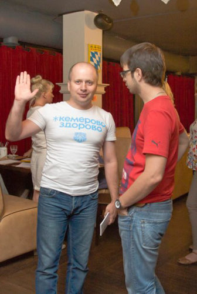

Я задал вопросы для проекта «Личные финансы» Вадиму Хващевскому.
Чем ты зарабатываешь на жизнь сегодня?
Я работаю специалистом по недвижимости. Помогаю выгодно купить/продать недвижимость. Специализируюсь на новостройках.
Во сколько лет ты впервые заработал деньги, как?
В 12 лет, с другом пилили доски и колотили из них деревянные ящики для стекла. На первые деньги накупили «сникерсов» и «марсов».
Изменилась ли структура твоих расходов за последние 2 года?
Я перестал тратить деньги на алкоголь. Стал тратить больше на детей. Остальное без изменений.
Ты пробовал вести учёт своих денег, записывать расходы. Делаешь ли это сейчас?
Я вел учет своих расходов 7 лет в таблице Exсel. В 2015 году я перестал вести учёт расходов т.к. не увидел пользы от конечного результата. Тем более у банков появились удобные личные кабинеты, где можно видеть структуру расходов.
Как относишься к кредитам, к кредитным картам?
Кредит в одних руках - это добро, в других руках - это зло. Кредитной картой перестал пользоваться после резкого снижения доходов.
Сколько у тебя банковских карт, каких банков, почему?
Тиньков - самый удобный банк. Бинбанк - кредитка с кэш-бэком.
Есть ли необходимая тебе вещь, которую ты сегодня не можешь себе позволить?
Нет.
Какой ежемесячный доход тебе необходим для комфортной жизни сегодня?
100 000 рублей.
Готовишься ли ты как-то к пенсии, в финансовом плане?
Да. С любого дохода я откладываю 10%. В ближайшем будущем планирую инвестировать в недвижимость. На рынке много интересных предложений.
Если говорить о деньгах, что бы ты пожелал себе 20-летнему сегодня.
Откладывай 10% от любого своего дохода и в 30 лет ты будешь очень рад накопившейся сумме :) и купишь себе квартиру или машину!
